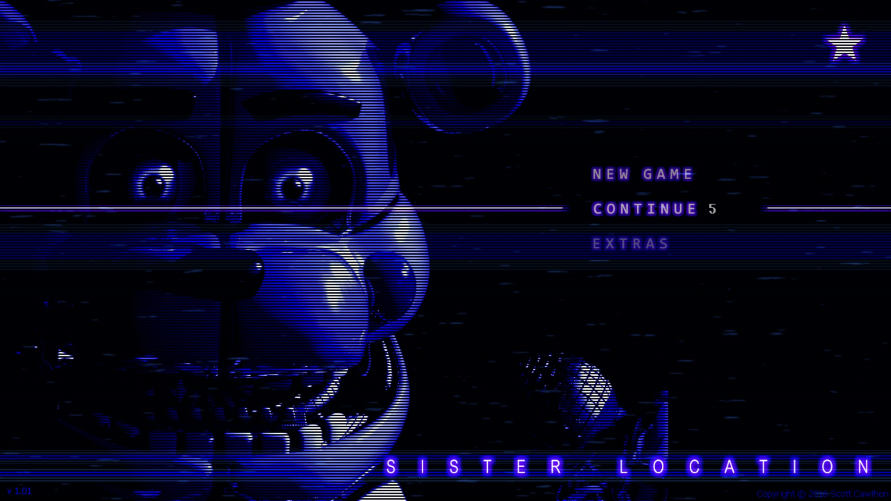

FNAF: Sister Location


There was never just one.
- Welcome to Circus Baby's Pizza World, where family fun and interactivity go beyond
anything you've seen at those *other* pizza places! With cutting-edge animatronic
entertainers that will knock your kids' socks off, as well as customized pizza catering, no
party is complete without Circus Baby and the gang!
- Now hiring: Late night technician. Must enjoy cramped spaces and be comfortable around active machinery. Not responsible for death or dismemberment.
- Now hiring: Late night technician. Must enjoy cramped spaces and be comfortable around active machinery. Not responsible for death or dismemberment.
Characters
- Circus Baby
- Ballora
- Funtime Freddy
- Funtime Foxy
- Ennard
- Bidybab
- Electrobab
- Minireena
- Micheal Afton
- Ballora
- Funtime Freddy
- Funtime Foxy
- Ennard
- Bidybab
- Electrobab
- Minireena
- Micheal Afton
Stars
There are 4 stars to unlock in the general plot.
1. Beat Night 5 for the real ending.
2. Complete Circus Baby’s death minigame.
3. Beat Night 5 in the Private Room for the Fake Ending.
4. Beat the Golden Freddy mode on V. Hard difficulty.
1. Beat Night 5 for the real ending.
2. Complete Circus Baby’s death minigame.
3. Beat Night 5 in the Private Room for the Fake Ending.
4. Beat the Golden Freddy mode on V. Hard difficulty.
Gameplay
- Unlike the previous games, Sister Location has players complete a series of
objectives depending on which night it is.
Audio
The main menu music (PC version).
The main menu music (Mobile and Console versions).
Development
- The game was first teased back in April 2016, with a single image of the title and the
animatronic, Circus Baby, on Scott's site; several more teaser images would eventually follow. A
later trailer revealed the release date of October 7, 2016.
- As part of the ongoing hype, Scott developed several "hoaxes" that kept conversations going. The first was dropped in August on his site, suggesting the game had been canceled due to leaks. However, fans soon discovered that the cancellation image, once lightened, revealed a news article detailing the closing of the in-game location due to gas leaks.
- The second "hoax" was much closer to the release date, in which Scott suggested he would have to work on the game for longer than anticipated due to its darker storyline, which would not be appropriate for younger players. Three days later, just as initially promised, the game released.
- As part of the ongoing hype, Scott developed several "hoaxes" that kept conversations going. The first was dropped in August on his site, suggesting the game had been canceled due to leaks. However, fans soon discovered that the cancellation image, once lightened, revealed a news article detailing the closing of the in-game location due to gas leaks.
- The second "hoax" was much closer to the release date, in which Scott suggested he would have to work on the game for longer than anticipated due to its darker storyline, which would not be appropriate for younger players. Three days later, just as initially promised, the game released.
Reception
- The game received mostly positive reviews. Metacritic gave it an 8.1/10, with TechRaptor
rating it the highest at a 9. Destructoid appeared to have the lowest, a 6, citing pacing and
continued reliance on the tropes that made the original a succes